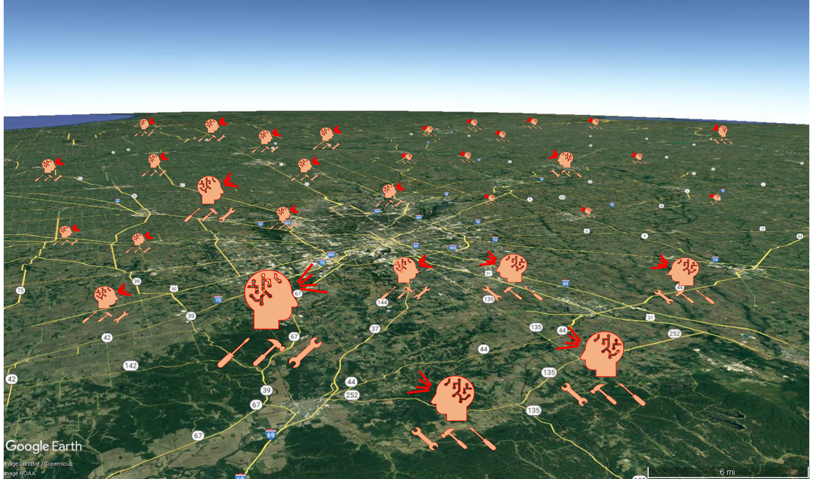

Table of Contents
Motivation
Managing infrastructure networks is like trying to solve a Rubik's cube while blindfolded—except the cube keeps changing, the stakes are billions of dollars, and communities depend on getting it right. Traditional network-level infrastructure asset management (NL-IAM) methods often oversimplify the problem, leading to suboptimal decisions that ignore the complex realities of deterioration, disasters, and budget constraints.
This groundbreaking study introduces a game-changing approach using multi-agent reinforcement learning (MARL) to tackle these challenges:
- Computational Complexity: Traditional optimization methods struggle with the "curse of dimensionality" when managing large networks of assets, forcing oversimplified solutions.
- Multiple Uncertainties: Real-world infrastructure faces stochastic deterioration, unpredictable earthquakes, and fluctuating costs—all happening simultaneously.
- Rigid Planning: Conventional methods produce fixed plans that can't adapt when reality deviates from expectations.
- Network Interactions: Decisions about one asset affect the entire network, but most approaches treat assets in isolation.
- Limited Scalability: Existing reinforcement learning approaches work for individual assets but fail when scaled to entire networks.
- The Solution: A decentralized multi-agent advantage actor-critic (DMA2C) framework that can handle complex networks while considering multiple uncertainties and providing flexible, adaptive strategies.
Authors: Vahid Asghari, Ava Jahanbiglari, and Shu-Chien Hsu
Repository: https://github.com/vd1371/ReinforceAM
Why it matters: A Revolutionary Leap Forward
This isn't just another academic exercise—it's a paradigm shift that could revolutionize how we manage critical infrastructure worldwide. Here's why this breakthrough matters:
- Dramatic Performance Gains: The DMA2C approach achieved 33% better outcomes compared to conventional methods, translating to billions in potential savings for infrastructure agencies.
- Real-World Adaptability: Unlike rigid optimization plans, RL agents adapt in real-time to changing conditions—whether it's an unexpected earthquake or budget cuts.
- Scalable Intelligence: The framework tackles the curse of dimensionality using statistical summaries, making it feasible to manage networks with thousands of assets.
- Uncertainty Mastery: The system handles multiple sources of uncertainty simultaneously—deterioration patterns, seismic events, and cost fluctuations—without oversimplification.
- Instant Decision Making: Once trained (which takes about 50 hours), the agents make optimal decisions instantly, providing real-time support for asset managers.
- Community Impact: Better infrastructure management means safer bridges, reduced traffic disruptions, and more sustainable communities—improvements that touch millions of lives.
Imagine a transportation agency that can predict exactly which bridges need attention, when to intervene, and how to allocate limited resources for maximum community benefit. That's the promise of this technology.
How it works
The DMA2C framework is like having a team of specialized AI agents, each responsible for different parts of the infrastructure network, working together to make optimal decisions. Here's the technical magic:
Multi-Agent Architecture
The system assigns individual reinforcement learning agents to each element of each asset:
- Decentralized Decision Making: Each agent focuses on its assigned infrastructure element (bridge deck, superstructure, or substructure) while considering network-wide impacts.
- Actor-Critic Design: Each agent uses advantage actor-critic (A2C) neural networks that provide stable learning and faster convergence compared to traditional methods.
- Cooperative Intelligence: Agents share information and coordinate decisions to optimize overall network performance, not just individual asset outcomes.
Solving the Curse of Dimensionality
The breakthrough innovation is the statistical summary approach:
- Smart Information Compression: Instead of processing detailed data about every asset in the network, agents receive statistical summaries (mean, percentiles, min/max)
- Scalable State Representation: Reduces computational complexity from exponential to manageable levels
- Network Awareness: Agents understand their position relative to the entire network without information overload
Uncertainty Modeling
The framework handles multiple types of uncertainty:
- Deterioration: Markovian models capture stochastic degradation patterns
- Seismic Events: Poisson point processes model earthquake occurrence and impact
- Cost Fluctuations: Wiener processes with drift capture market volatility
- Traffic Variations: Future traffic patterns affect user costs and maintenance priorities
Reward Engineering
The system optimizes a sophisticated reward function that balances:
- Stakeholder Utilities: Maximizing community benefits from infrastructure improvements
- Agency Costs: Managing maintenance, rehabilitation, and reconstruction expenses
- User Costs: Minimizing traffic disruptions and travel delays
- Budget Constraints: Ensuring decisions stay within financial limitations
Real-world Applications
The framework was tested on a challenging real-world scenario: managing 48 high-traffic bridges (over 100,000 average daily traffic) in Indiana's highway network over a 20-year horizon.
Indiana Bridge Network Case Study
The implementation demonstrates practical effectiveness:
- Scale: 48 bridges with 144 elements (deck, superstructure, substructure each)
- Decision Horizon: 20-year management timeline with biannual decision points
- Budget Constraints: $10 million biannual budget allocation
- Action Space: Four intervention options per element (do nothing, maintain, rehabilitate, reconstruct)
Impressive Results
The DMA2C agents significantly outperformed traditional methods:
- 33% Improvement: Higher stakeholder utilities compared to baseline optimization
- Cost Variability: 20% difference between minimum and maximum expected costs, enabling better risk management
- Flexible Strategies: Adaptive decision-making that responds to changing conditions
- Real-time Execution: Instant decision-making once agents are trained
Strategic Insights
The system provides valuable strategic intelligence:
- Action Probabilities: Likelihood of different maintenance actions for each asset
- Resource Planning: Long-term budget and workforce allocation guidance
- Risk Awareness: Identification of critical assets requiring attention
- Scenario Analysis: Understanding cost distributions under different uncertainty scenarios
Future Extensions
The framework's modular design enables expansion to:
- Mega Networks: Scaling to thousands of assets across entire states or countries
- Multi-Infrastructure: Extending beyond bridges to pavements, water systems, and power grids
- Advanced Hazards: Incorporating climate change impacts, flooding, and other disaster scenarios
- Smart Integration: Connecting with IoT sensors and structural health monitoring systems
- Policy Optimization: Supporting strategic infrastructure investment decisions at the national level
This breakthrough represents the future of infrastructure management—intelligent, adaptive, and capable of handling the complex realities of modern civil infrastructure systems.